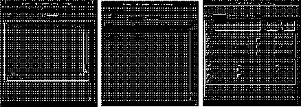
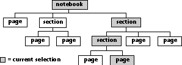
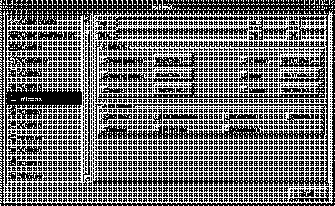
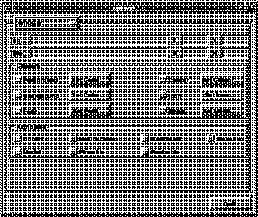

Notebook
The Notebook classes provide facilities for creating and manipulating notebooks. Notebooks are dialog items that organize and present information to a user so the user can find, display, and edit the information quickly and easily. Notebooks are often used in dialogs that implement preferences or other user settings.
A notebook resembles a physical notebook in appearance and performance. It contains one or more pages each of which contains dialog items that the user can view or edit. Only one page (the active page) is visible at a time. The remaining pages are "stacked" behind the active page.
Pages in a notebook can be grouped into sections. A section in a notebook is similar to a page, except its contents are pages or other sections. The contents of a section are only visible when the user steps to that section.
Each page and section has an associated tab which can be graphically displayed with the notebook. The tab, which corresponds to an index tab in a physical notebook, allows the user to "step" to pages that are not currently visible.
By using pages and sections to group related items, large amounts of data can be presented to the user in a simple framework that does not sacrifice screen real estate. For example, the Visual Resource Builder (vre) uses notebooks to implement resource editors. The dialog editor in vre contains three pages; each page represents a set of related features. Figure 61 shows each of the three pages from the dialog editor.

Figure 61. Notebook implementation in vre
Folio Status line for a notebook that displays the total number of
pages in a notebook and the page number of the active
page.
Major Tab Set Manages the major tabs of a notebook.
Major Tabs Tabs drawn for top-level pages and sections in a notebook.
Minor Tab Set Manages the minor tabs of a notebook.
Minor Tabs Tabs drawn for second level pages or sections in a
notebook. If a section is at the top level of a notebook tree,
and is the active selection (is visible), then tabs are drawn
for each page and section contained within the section.
Notebook Dialog item that presents information to a user in a series
of pages and sections. Pages and sections can optionally
display tabs which allow quick access to the page or
section. Notebook Class Subclass of a section that can hold sections or pages. A
notebook item is an instance of this class.
Notebook Tree Hierarchical representation of an instance of a notebook.
A notebook is always at the root of the tree. Sections are
organizational branches to pages or other sections in the
tree. Pages are the leaves of the tree.
Page Unit of information displayed by a notebook and is
comparable to a sheet from a physical notebook. A page is
a subclass of container and can hold any number of dialog
items. Pages are typically used to present information to a
user that the user can view or edit. Page Buttons Buttons displayed with a notebook that allow the user to
step forward or backward through the pages of a notebook.
Section Subclass of a page that holds pages or other sections. Each
section contains a current selection which is the last page
(or section) visited by the user. Style Series of attributes that controls the appearance and
behavior of a notebook. The defaults are set by the default
laf in the notebook's class but can be overridden per
instance.
Tab Visible extension to a page or section that allows the user
direct access to that page or section. Tabs for a notebook
are contained in tab sets.
Tab Set Holds, displays, and manages a collection of tabs. The
current state and selection of the notebook is reflected in
the tab set. A major and minor tab set is automatically
created, if necessary, with each notebook.
Glossary
The following terminology is used throughout this document when discussing notebooks.Active or Current Selection The page (or section) of a notebook that is currently
visible. Also referred to as the active page.
Notebook items are modeled after physical notebooks.
Pages are always leaves on a notebook tree.
Sections allow you to group related information in a
hierarchical format.
Notebook Tree
A notebook is built upon a tree structure of sections and pages.
Pages are always leaves of the tree while sections provide organizational branches to leaves or other sections. Note that a section is a special type of page that holds pages or other sections. The root of the tree is the notebook, which is a special case of section.
A current selection is the last page (or section) visited by the user in a section. Each section contains information designating its current selection. When the user steps through a notebook, the Notebook class uses an in-order tree traversal algorithm to locate the current selection for each step. Figure 62 illustrates the hierarchy of a typical notebook tree.

Figure 62. Notebook tree
A notebook manages the major and minor tab sets, page buttons, and an optional style.
Tabs are subclassed from dialog item and inherit all the attributes of a dialog item. Each class of tab contains additional methods to calculate and draw its border and contents. This way you can easily subclass to create a tab that is different than the default.
By overriding the notebook member functions for creating and managing a tab set, there are many different ways that a notebook can be graphically represented. The notebook class provides only one representation, a tab set based on a container that displays tabs similar to an actual tab on a file folder. Figure 63 and Figure 64 show two alternative ways to implement a tab set. Figure 63 shows a list item implementation¯a selection from the list at the left corresponds to the page displayed at the right. Figure 64 uses an option menu to select the page to be displayed.

Figure 63. Tab set implemented with a list item

Figure 64. Tab set implemented with an option menu
Each notebook can contain a major and minor tab set.
The following attributes are defined in a notebook style.
Minor Tab Set Side Specifies the side of the notebook where the minor tab set
should appear. Values are vnotebookTABSET_RIGHT,
vnotebookTABSET_LEFT, vnotebookTABSET_TOP,
vnotebookTABSET_BOTTOM.
Tabs Specifies the type of tabs that are to displayed on the
notebook. Values are vnotebookTABS_NONE,
vnotebookTABS_PAGE, vnotebookTABS_MAJOR,
vnotebookTABS_MAJOR_AND_MINOR.
Tab Style Specifies the default border style of a tab. Values are
vnotebookTAB_STYLE_RECT,
vnotebookTAB_STYLE_ROUND_RECT, and
vnotebookTAB_STYLE_BEVELED.
Folio Specifies if the folio should be shown or not. Values are
TRUE for shown and FALSE for not shown.
Folio Justify Specifies the justification of the string that appears in the
folio. Values are vnotebookFOLIO_JUSTIFY_RIGHT,
vnotebookFOLIO_JUSTIFY_CENTER, and
vnotebookFOLIO_JUSTIFY_LEFT.
Binding Specifies the type of binding for the 3D notebook. Values
are vnotebookBINDING_PERFECT and
vnotebookBINDING_SPIRAL.
Binding Size Specifies the number of pixels that the perfect binding
occupies.
Page Buttons Specifies if the page buttons should be shown or not.
Values are TRUE for shown and FALSE for not shown.
Vertical Tabs Specifies whether or not to draw tabs that are on the
vertical side of a notebook rotated. Values are
vnotebookVERTICAL_TABS_NORMAL and
vnotebookVERTICAL_TABS_ROTATED.
Pages Wrap Specifies if traversal of notebook pages should wrap or not
from the first page backward to the last page or from the
last page forward to the first page. Values are TRUE and
FALSE.
Page Borders Specifies whether or not borders should be drawn on
individual pages. Values are TRUE for borders and FALSE
for no borders.
Page Count Number of virtual pages that are drawn in certain look-
and-feels to help provide a visual 3D representation of a
notebook.
Page Step The number of pixels that are in between each virtual page
of a 3D representation of a notebook.
Tab Set Buttons Centered Determines if the buttons to scroll the tabs in a tab set are
to be centered in the tab set rectangle or aligned flush with
the inside border. Values are TRUE for centered or FALSE
for flush.
Tab Set Buttons Placement Determines where the buttons to scroll the tabs in a tab set
are displayed. Values are
vnotebookTABSET_BUTTONS_SEPARATE and
vnotebookTABSET_BUTTONS_ADJACENT.
Tab Set Partial Tabs Specifies whether or not tabs that are partially visible in a
tab set should be shown or not. Values are TRUE to show
partial tabs and FALSE to not show them.
Page Inset Specifies the number of pixels that the page is inset when
there are no borders are turned on for pages.
Page Inset Border Specifies the number of pixels that the page is inset when
there are borders are turned on for pages.
Tab Spacing The amount of space that is between each tab in a tab set.
Tab Inset X The amount of space to inset the tab item rectangle in the
x direction to determine the content rectangle.
Tab Inset Y The amount of space to inset the tab item rectangle in the
y direction to determine the content rectangle.
Tab Raise The amount of space to raise a tab when it is the currently
active tab. This is not used in all lafs.
Tab Select Resize The amount of space to resize a tab when it is the currently
active tab. This is not used in all look-and-feels.
Folio Button Margin The amount of space to leave between the page buttons
and folio when both are displayed on the notebook.
Button Margin The amount of space to leave between the two page
buttons.
Button Border Margin The amount of space to leave between the page buttons
and border.A notebook style contains the settings
necessary to provide the user a way to override general
attributes.
The notebook object is similar to this actual physical model; however, there are two levels of tabs, major and minor. The placement of the major and minor tab sets determine the orientation of the notebook. The binding is always placed opposite the side of the major tab set. The minor tab set is placed on either of the adjacent sides.
To make a notebook appear more three-dimensional, you can specify the number of pages visible from the edge of the pad or book that the notebook represents. The page count attribute of a style defines the number of virtual pages shown, and the page step attribute defines the distance between each virtual page.
The contents of a tab along the vertical side of a notebook (vertical tab) are normally drawn horizontally. A problem inherent with drawing vertical tabs horizontally is the amount of screen real estate it takes to represent them. You can specify an attribute for a vertical tab that defines whether the tab contents should be drawn horizontally or rotated ninety degrees.
Use CreatePage and AppendPage to create pages and add them to a notebook. You can also use AppendSectionPage to add pages to a section.The Visual Resource Builder provides facilities to create and edit pages which can be stored in a resource file. To read a page from a resource file, use LoadPage. For more information on using the Visual Resource Builder, refer to Visual Resource Builder User's Guide.
To retrieve the container that a page is based on use GetPageContainer. Any of the container API entry points can be used to perform operations on the container such as append, delete, or change the index of dialog items. Refer to the Container chapter for more information on the container entry points.
Returns TRUE if a page is in a valid state so that we can
change to another page.
vnotebookSELECT_PAGE
This method is called when a page is selected as the current
page in the notebook.
vnotebookUNSELECT_PAGE
This method is called when a page is no longer selected as
the current page in the notebook.
vnotebookCREATE_PAGE_TAB
This method is called when you create a new tab for a page.
This method allows you to have your own subclass of tab.
Each section keeps track of its current selection. The current selection is the section or page that was last visited by the user. When a user steps to a section the current selection becomes active. If the current selection is a page, then the page is displayed. If the current selection is itself a section, then the Notebook class gets the current selection for this section.The current selection is the currently visible section or page.
GetSectionCurrentPage returns the currently active page or section. You can test whether a section or page is returned by this function with IsSection. If you have a notebook and you just want to get the actual page that is in current use, call DetermineCurrentPage. DetermineCurrentPage calls GetSectionCurrentPage until a page is returned, as illustrated in Example 110.
Example 110. DetermineCurrentPage
Example 111. Stepping through pages testing for a section
A tab can optionally have an image associated with it. There are a series of SetTabImage* functions you can use to add, remove, or modify the behavior of the image associated with a tab. An image does not have to be explicitly set for each tab for a tab to have an image associated with it. The image can be derived from a parent tab by traversing the notebook tree. For example, if we set the image for a section's tab, each page's tab under the section would use the image from its parent section's tab (unless an image was explicitly set for the page's tab). If you do not want a tab to derive an image, call SetTabImageNone with TRUE.
You can set the font for a tab by calling vdialogSetItemFont on a vnotebookTab item. If you do not specify a font the default font is used. The font for a tab can also be inherited from a tab's parent object in the same way that an image can be inherited.
Tab sets are created when the tab style is set with SetStyleTabs. The tab sets are owned by the notebook and are destroyed when the notebook is destroyed. After setting the tab style with SetStyleTabs, add the style to the notebook with SetStyle.
The Notebook class provides four options for tab set styles which are listed in Table 30. Pass the indicated constant to SetStyleTabs to specify a tab set style. Example 112 shows how to specify both major and minor tab sets for a notebook.
Example 112. Setting a tab style for a notebook
If you want to have a tab visible for each page in a notebook you do not need to use sections. Specify vnotebookTABS_PAGE for notebooks that contain only pages. However, if you want to have both major and minor tabs, your notebook must contain sections. Specify vnotebookTABS_MAJOR_AND_MINOR to display tabs on the first and second level.
Specifying vnotebookTABS_PAGE with notebooks that are more than one level deep essentially flattens out the hierarchy of the notebook¯tabs for all pages are visible. In this case, the Notebook class uses an in-order traversal of the notebook tree to determine the order of tabs displayed.
To determine the value of one or more settings you need to use the function DetermineStyle. This function first checks the style of the notebook for each setting requested and, if the setting is still not defined, retrieves the setting from the class style.
Recalculates the tabs that belong in a given tab set. All tabs
that do not belong are deleted and the new tabs are added.
vnotebookGET_TABSET_SIZE Calculates the size and position of the tab set.
vnotebookGET_MAX_TABSET_TAB_SIZE
Returns the maximum tab size for the tabs in a tab set.
vnotebookCREATE_TABSET
Creates the given type of tab set (major or minor).
vnotebookGET_TABSET_TAB_COUNT These methods are usually called by the default
vnotebookRECALC_TABSET_TABS methods when
collecting the tabs that belong in the given tab set.
vnotebookGET_TABSET_CLIP_RECTS
Returns the rectangles that need to clipped out of the
notebook binding when drawing.
vnotebookSET_TABSET_TAB_SELECTED
Sets which tab is selected in a tab set. The tab set should
keep track of which tab is selected to save unnecessary
redraws and calculations.
vnotebookSCROLL_TABSET_TAB_INTO_VIEW
Scrolls a tab into view within its tab set.
vnotebookCALC_TABSET_TAB_RECT
Calculates the rectangle of a tab in a tab set.
Creates the specified page button.
vnotebookGET_PAGE_BUTTON_SIZE Calculates the size and position of the page buttons.
Pages
A page represents the information presented on one sheet from a physical notebook. A page is a subclass of container and holds any number of dialog items. Typically, the dialog items represent settings that a user can view or edit. Each page contains a tab which is owned by the notebook. The class for a page contains methods that allow the page to be manipulated by the notebook or section that owns it. Sections
A section provides a way to group and organize information in a notebook. A section is a subclass of a page but can only contain pages and other sections. Since sections can contain other sections, information can be organized into a hierarchical format. Notebook
A notebook is a subclass of section and inherits from the section and page class that it is built upon. A notebook is at the root of a notebook tree and contains all the pages and sections in the tree. Tabs
Each page and section of a notebook has an associated tab which provides the user access to the page or section. The page or section that a tab represents owns the tab and is responsible for destroying it. Tabs are managed and displayed by tab sets. Refer to the section "Tab Sets" for more information on tab sets. Tab Sets
Tabs belong to a tab set which is responsible for managing and displaying the tabs. The tab set can be any type of dialog item that can reference the tabs. For example, if a tab set is represented as a list item, then the names for each tab is contained in the list. When the user selects a name from the list, the page corresponding to that tab is displayed in the notebook. Option menus and containers are examples of other dialog items you can use to represent a tab set. Major and Minor Tab Sets
A tab set is either a major or minor tab set. A major tab set contains all the tabs for pages and sections at the top level of a notebook. A minor tab set contains tabs for pages or sections at the second level of a notebook. (The pages and sections contained within a top level section are at the second level of a notebook.) A minor tab set is displayed only when the section it represents is visible. Notebook Styles
Various attributes of a notebook control its behavior and appearance. These attributes are determined from notebook styles. The vnotebook class contains a style that is the look-and-feel default for a given look-and-feel. To override one or more of these defaults, a style is installed on the notebook instance. If a style is not present or a style setting is not specified in the notebook's instance, it is retrieved from the class-level style of the notebook.Major Tab Set Side Specifies the side of the notebook where the major tab set
should appear. Values are vnotebookTABSET_RIGHT,
vnotebookTABSET_LEFT, vnotebookTABSET_TOP,
vnotebookTABSET_BOTTOM.
Visual Representation
The appearance and visual orientation of a notebook is largely determined by the tab sets and binding. Usually, a notebook resembles a note pad or book with a three dimensional look. A pad or book is held together by a binding on one side and optionally contains tabs along another side (usually the side opposite the binding). The tabs allow you to quickly access to a particular page or section in the notebook. Key Functionality
The next three sections follow the class hierarchy of notebooks and discuss pages, sections, and notebooks. (Notebooks are subclassed from sections, which in turn are subclassed from pages.) Next is a discussion on tabs and tab sets, followed by a section on notebook styles. Creating a Notebook
To create a standard notebook, call Create. Use AppendSectionPage to append pages or sections to the notebook. The order of the pages and sections in a notebook determine the order that pages in a notebook are traversed. Use GetPageIndex to determine the order (index) of a page. To change the index of a page, and thus the order, use SetPageIndex. Page Methods
The following methods for pages are commonly used in notebooks.vnotebookPAGE_IS_VALID
Use CreateSection to create a section. To add a section to a notebook or section, you must first retrieve the page from the section with GetSectionPage. Then use either AppendPage or AppendSectionPage to append it to a notebook or section.NOTE: Most entry points like SetSectionCurrentPage or AppendSectionPage
take a page as the parameter. Since a section is a type of page, you can
retrieve the page from the section with GetSectionPage. Use this function
to pass a section into any function that takes a page as a parameter.
Example 110 shows the implementation of DetermineCurrentPage.vnotebookPage *vnotebookDetermineCurrentPage( vnotebook *notebook )
{
vnotebookPage *page;
page = vnotebookGetCurrentPage( notebook );
while ( page && vnotebookPageIsSection( page ) )
page = vnotebookGetSectionCurrentPage((vnotebookSection *) page );
return( page );
}
Example 111 shows how to count the number of pages in a section. The total returned includes the pages in every subsection./*
* Recursively determines the number of actual pages under a section.
* The count includes the page count of any subsections
*/
int determineSectionPageCount( vnotebookSection *section )
{
int count;
int totalPages;
int i;
vnotebookPage *page;
/*
* Initialize page count
*/
totalPages = 0;
/*
* Get each page from the section and react accordingly
*/
count = vnotebookGetSectionPageCount( section );
for ( i = 0; i < count; i++ )
{
if ( vnotebookPageIsSection( page ) )
totalPages += determineSectionPageCount( (vnotebookSection *) page );
else
totalPages++;
}
return( totalPages );
}
You can set the title of a tab with SetTabTitle. If the title of a tab is not specified, the title is taken from the title of the dialog item that the page is based on. // ...
vnotebookStyle style;
// ...
vnotebookSetStyleTabs(&style, vnotebookTABS_MAJOR_AND_MINOR);
vnotebookSetStyle(notebook, &style);
// ...
Table 30. Tab set styles
Constant
Tab Style
Description
vnotebookTABS_NONE
No tab sets are created.
No tabs are visible.
vnotebookTABS_PAGE
Major tab set created.
Minor tab set not created.
Tabs are visible for every page in
the notebook.
vnotebookTABS_MAJOR
Major tab set created.
Minor tab set not created.
Tabs are visible for each page and
section at the top level of the
notebook. Tabs are not visible at
the second level.
vnotebookTABS_MAJOR_AND_MINOR
Major and minor tab sets
are created.
Tabs are visible at the top level and
second level. (If a top level section
is visible, then a tab is visible for
every page and section in that
section.)
Overriding Default Styles
Styles in a notebook control much of its appearance and behavior. The class of a notebook contains a style that defines the default values, If you want to change one or more of the settings from the default, a style is installed on the notebook instance with the new settings defined. For example: style2 = vnotebookCreateStyle();
vnotebookSetStyleFolio( style2, FALSE );
vnotebookSetStylePageButtons( style2, FALSE );
vnotebookSetStyleOwned( notebook, style2 );
A style only exists on the notebook if you have changed the default of one or more settings. If you want to change the defaults for all notebook instances, you can retrieve the style from the class and change the settings as desired. vnotebookInitStyle( &style );
vnotebookDetermineStyle( notebook, &style, vnotebookSTYLE_FOLIO |
vnotebookSTYLE_PAGE_BUTTONS );
pageButtons = vnotebookGetStylePageButtons( &style );
folio = vnotebookGetStyleFolio( &style );
vnotebookDestroyStyle( &style );
Tab Sets
vnotebookRECALC_TABSET_TABS
vnotebookCALC_TABSET_RECT
vnotebookGET_TABSET_TAB_AT
vnotebookADD_TABSET_TAB
vnotebookDELETE_TABSET_TAB
Page Buttons
vnotebookCREATE_PAGE_BUTTON
vnotebookCALC_PAGE_BUTTON_RECTS
Folios
- vnotebookGET_FOLIO_SIZE
vnotebookCALC_FOLIO_RECT
Calculates the size and position of the folio.
Draws the folio in the specified rectangle. The default method uses page number and total from the function GetCurrentPageNumber to construct a string to draw.
Drawing
- vdialogDRAW_ITEM
This function will not usually need to be overridden. The default method draws the page buttons, tab sets, and makes method calls to draw vnotebookDRAW_BINDER and vnotebookDRAW_PAGE_CONTENT.
vnotebookDRAW_PAGE_BORDER
This function does nothing in the default implementation.
vnotebookDRAW_PAGE_CONTENT
Draws the contents of the notebook which corresponds to the current page in the notebook. This method would not usually be overridden.
vnotebookDRAW_BINDER
Draws the number of graphical pages that is determined from the styles. After setting up the proper clip rects, vnotebookDRAW_PAGE_AT is called for every graphical page.
vnotebookDRAW_PAGE_AT
Draws the rectangle that represents one graphical page of the notebook binder.
vnotebookDRAW_FOLIO
Draws the folio in the specified rectangle. The default method uses page number and total from the function GetCurrentPageNumber to construct a string to draw.
Placement and Size
- vnotebookCALC_PAGE_CONTENT_RECT
vnotebookGET_PAGE_CONTENT_MIN_SIZE
vnotebookGET_PAGE_CONTENT_NATURAL_SIZE
vnotebookGET_PAGE_BORDER_SIZES
vnotebookGET_PAGE_DECORATION_SIZES
vnotebookGET_FOLIO_SIZE
vnotebookCALC_FOLIO_RECT
vnotebookGET_PAGE_BUTTON_SIZE
vnotebookCALC_PAGE_BUTTON_RECTS
vnotebookGET_TABSET_SIZE
vnotebookCALC_TABSET_RECT
vnotebookGET_MAX_TABSET_TAB_SIZE
vnotebookCALC_TABSET_TAB_RECT
Sample Code
Complete source code demonstrating some of the concepts presented in this chapter is available in your Galaxy distribution in the samples/docsamps directory.The notebook2 example shows how to us a vlistitem as a tab set. Each cell in the vlistitem represents a tab in the notebook.
Table of Contents
Help Map
Need help? Contact Visix.